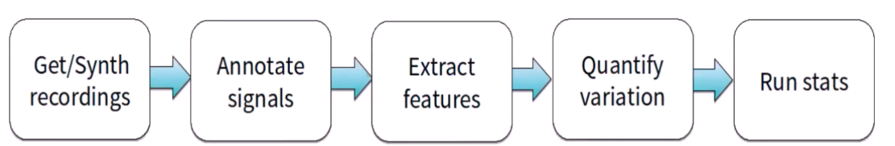

1 Intro
(This post is in progress!) The eighth post from a series of posts about my Masters project with the Physics Department at Durham University.
2 This post is in progress!
3 Meeting:
3.1 During the meeting we discussed:
4 No fine tuning, just prompts:

5 Finetuning a regular pretrained model on only birdsong to generate only birdsong.
This is the first, easiest, but also likely the weakest approach to generate spectrograms. Regardless, it’s worth doing as an initial test for a comparison with the other methods.
I have finetuned a pretrained model with X images of American Robin spectrograms. I also finetuned the same pretrained model with X images of myself. The latter will serve as a tangible but limited intuitive visual comparison of how well the model can generated images of new data.
The reason why the comparison is limited is threefold. 1. Because the angle and quality of the images of myself matter significantly to how well the pretrained model can generate images. 2. Because the prompt used to generate the images matters. 3. Because judging how ‘good’ a generated image of a human is isn’t easy to make objective. It’s hard to define heuristics that accurately evaluate how good a human would like a photo. When I generated images of my friend, they were generated in batches of 10, and usually only 1-3 I judged as good despite the fact that the model used the same principles to generate all 10.
I tried fine-tuning with 5 images of myself for comparison, and fine-tuning with 5 bird spectrograms of the same species.